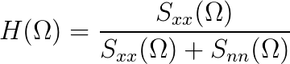

We begin with a synthetic signal s distorted by stationary, additive,
white, Gaussian noise N resulting in r = s + N
where s[n] is a delayed impulse δ[n –
no] and the noise power density is No.
The Wiener filter h to restore the signal s
from r is given by
Equation 10.22 which is specified in
the frequency domain H and is repeated below:
(10.35)

In this exercise we will examine how well this technique works. Use the slider control
to adjust the signal-to-noise ratio. SNR. Use the playback buttons to listen to
the original signal, the signal corrupted by noise, or the "restored" signal that
results from Wiener filtering.
Based upon the information given above, determine a simple expression
for H(Ω).
Starting from SNR = 1000:1, look at the output of the Wiener filter in
the lower, right panel as the SNR is decreased. At what SNR
is the signal no longer discernible from the noise?
When comparing the result of the Wiener filtering to the noise signal displayed
in the top, left panel, can the restoration filter make the signal visible after
you would expect it to be buried (invisible) in the noise?
After listening to the original signal, at what SNR can you no longer
distinguish (hear) the signal embedded in the noise? Is the signal recognizable
in the Wiener-filtered version? Is it visible in the panel in the bottom
right?